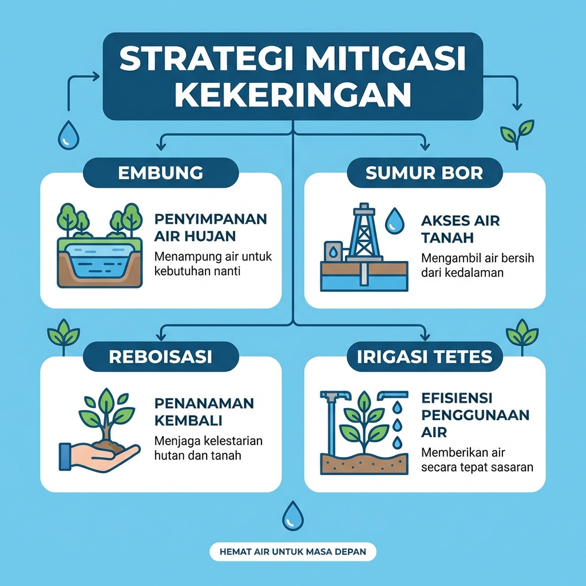
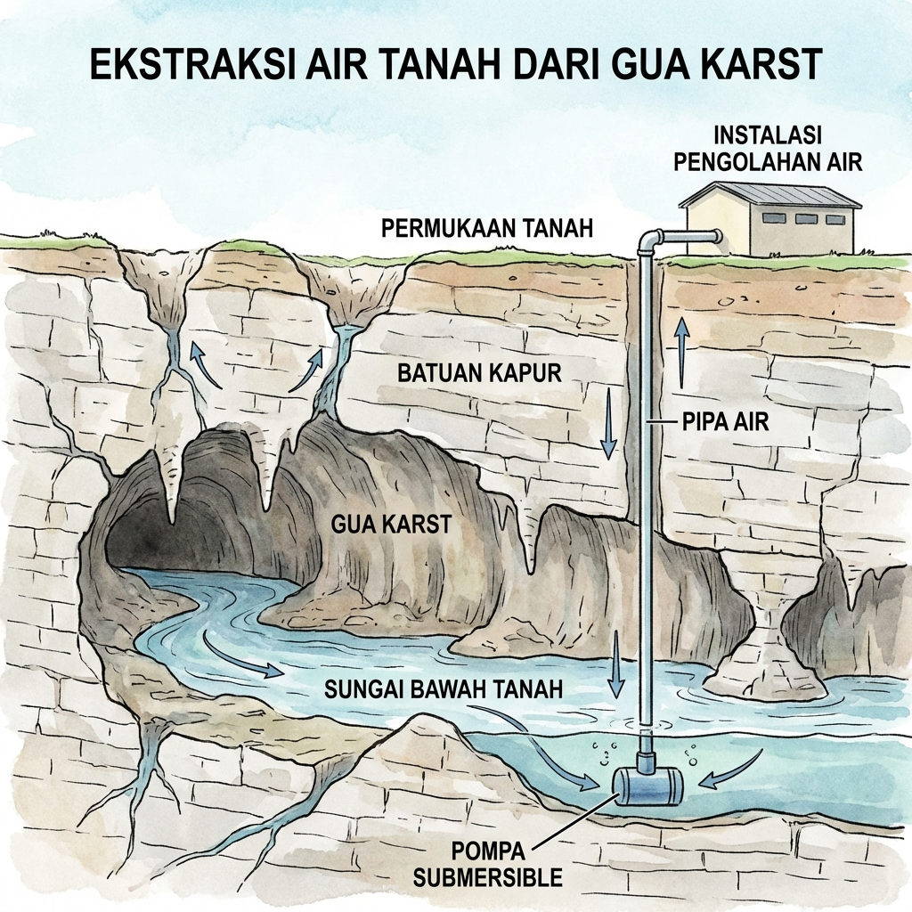
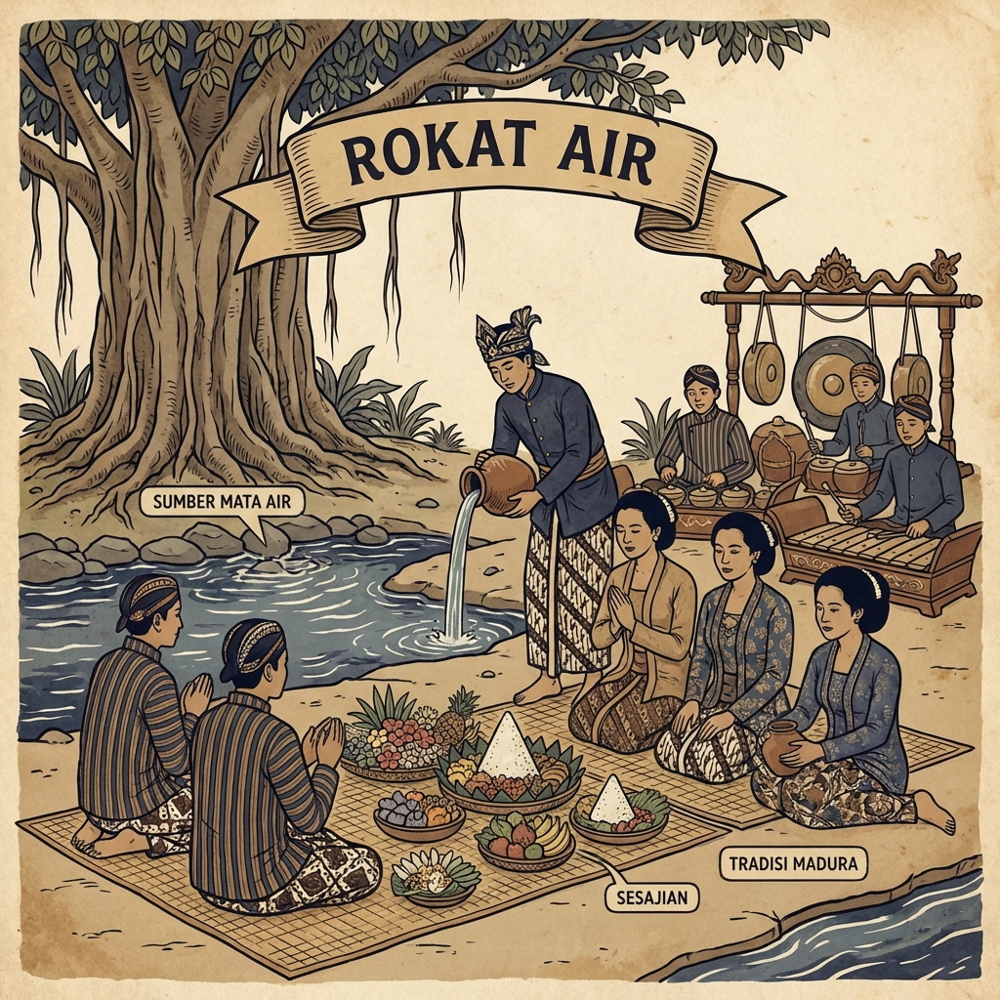

Penanggulangan kekeringan di Madura memerlukan kombinasi antara pendekatan struktural (fisik) dan non-struktural (sosial-edukasi) yang disesuaikan dengan karakteristik geologi karst.
Strategi Mitigasi Kekeringan di Wilayah Karst
Solusi struktural dan non-struktural untuk mengatasi bencana kekeringan di Madura
03
Strategi Mitigasi Bencana Kekeringan

Diagram: 4 Pilar Utama Strategi Mitigasi Kekeringan di Madura
Sumber : Olah Data Peneliti
Pembangunan Sumur Pertanian

Sumber: Dokumentasi Pribadi
Sumur Pertanian di Kecamatan Gapura
Sumenep
Sumur Pertanian
Pemerintah dan masyarakat membangun sumur pertanian di wilayah kritis air. Sumur ini menembus lapisan akuifer karbonat yang berada di kedalaman puluhan hingga ratusan meter untuk memenuhi kebutuhan irigasi pertanian.
Catatan Penting: Pengeboran di wilayah karst harus dilakukan dengan hati-hati agar tidak merusak sistem aliran sungai bawah tanah yang sudah ada.
Optimalisasi Sungai Bawah Tanah dan Gua Karst
Potensi Tersembunyi di Bawah Tanah
Kawasan karst Madura menyimpan potensi air yang sangat besar di bawah permukaan dalam bentuk sungai bawah tanah.
💡 Kisah Sukses: Gua Suruh
Pengangkatan air sungai bawah tanah dari dalam gua menggunakan pompa submersible berhasil menekan biaya air dari Rp 50.000 per m³ menjadi hanya Rp 5.000 per m³!
Potensi di Madura
Gua-gua seperti Gua Mahakarya di Gili Iyang atau gua-gua di kawasan Bukit Geger memiliki potensi untuk dikembangkan bukan hanya sebagai objek wisata, tetapi juga sebagai sumber cadangan air bersih.
Pemanfaatan air gua harus diintegrasikan dengan konsep konservasi agar ekosistem gua dan biota di dalamnya tetap terjaga.

Diagram: Sistem pengangkatan air dari sungai bawah tanah menggunakan pompa
Sumber : Olah Data Peneliti
Konservasi Lahan dan Teknik Pertanian Adaptif
Reboisasi di Kawasan Karst
Mitigasi jangka panjang harus difokuskan pada pemulihan daya dukung lahan. Reboisasi di kawasan bukit karst sangat penting karena vegetasi membantu proses infiltrasi air hujan ke dalam zona epikarst — lapisan batuan teratas yang banyak menyimpan air.
⚠️ Larangan Penambangan
Penambangan batugamping di area tangkapan hujan harus diatur secara ketat atau dilarang sama sekali karena dapat menghancurkan "spons" alami penyimpan air tanah.
Teknik Pertanian Hemat Air
Irigasi Tetes (Drip Irrigation)
Memberikan air langsung ke akar tanaman, menghemat hingga 50% air dibanding irigasi genangan.
Irigasi Pancar (Sprinkler)
Menyemprotkan air seperti hujan, lebih efisien untuk lahan luas.
Penggunaan Mulsa
Penutup tanah untuk mengurangi penguapan langsung dari permukaan tanah.
Varietas Tahan Kekeringan
Menggunakan tanaman yang dapat bertahan dengan air minimal.
Ringkasan Strategi Mitigasi Kekeringan
| Strategi Mitigasi | Komponen Utama | Manfaat Strategis |
|---|---|---|
| Struktural (Makro) | Pembangunan Sumur Pertanian | Penyediaan cadangan air fisik secara masif |
| Struktural (Mikro) | Pengangkatan air sungai bawah tanah gua | Pemanfaatan potensi air tersembunyi dengan biaya murah |
| Non-Struktural | Konservasi zona epikarst dan reboisasi | Menjaga keberlanjutan debit mata air secara alami |
| Pertanian | Penerapan irigasi sprinkler dan mulsa | Efisiensi penggunaan air di lahan kering tegalan |
| Edukasi | Pendidikan kebencanaan dan peringatan dini | Meningkatkan resiliensi masyarakat terhadap krisis air |
04
Mitigasi Berbasis Kearifan Lokal
Masyarakat Madura telah lama beradaptasi dengan kondisi kering melalui kearifan lokal yang turun-temurun. Strategi ini merupakan bagian dari mitigasi non-struktural yang sangat efektif.
Tembakau sebagai Tanaman Resilien

Sumber: RRI.co.id
Tanaman Tembakau
Di lahan kering (tegalan) Madura, tembakau menjadi komoditas komersial utama karena kemampuannya bertahan dalam kondisi cekaman lingkungan.
Mengapa Tembakau?
💪 Ketahanan Cekaman
Tembakau (seperti varietas 'Manilo') memiliki mekanisme pertahanan terhadap kekeringan yang bisa diperkuat dengan manajemen pemupukan Nitrogen (N) yang tepat untuk menjaga aktivitas antioksidan tanaman.
🌾 Strategi Tanam Safety-First
Petani Madura menggunakan prinsip safety-first: tanaman pangan (jagung) ditanam untuk kebutuhan sendiri, sementara tembakau ditanam sebagai penyangga ekonomi karena nilai jualnya yang tinggi meski di musim kering.
Industri Garam: Berkah di Balik Kekeringan
Industri garam merupakan bentuk adaptasi unik di mana kekeringan meteorologis yang panjang justru menjadi faktor pendukung utama produksi.
Keunggulan Garam Madura
Kualitas Mineral Tinggi
Struktur tanah Madura yang dominan kapur (karst) memberikan mineral tambahan pada garam rakyat, menjadikannya lebih gurih dan berkualitas tinggi.
Efisiensi Penguapan
Musim kemarau yang panjang meningkatkan konsentrasi garam dalam air laut. Hal ini mempercepat proses kristalisasi dan menghasilkan garam yang lebih pekat.
Sistem Bagi Hasil
Produksi garam sering dikelola melalui Kelompok Usaha Garam Rakyat (KUGaR) dengan sistem bagi hasil, yang menjaga ketahanan ekonomi komunitas pesisir saat sektor lain terdampak kekeringan.


Sumber: Dokumentasi Pribadi
Lokasi:
Kecamatan Kalianget, Sumenep
Kearifan Lokal Lainnya di Madura

Ilustrasi: Tradisi Rokat Air - ritual syukur di sumber mata air
Sumber : Olah Data Peneliti
Ritual Ojung
Pertandingan cambuk rotan sebagai ritual memanggil hujan dan mempererat persaudaraan antar warga.
Rokat Air
Tradisi syukur dan doa bersama di sumber mata air agar air tetap mengalir. Ritual ini memperkuat kesadaran kolektif untuk menjaga sumber air.
Pamali (Larangan Adat)
Larangan tradisional menebang pohon di sekitar mata air yang secara efektif menjaga daerah tangkapan air karst.
Pelajaran Penting: Kearifan lokal Madura menunjukkan bahwa masyarakat telah lama memahami pentingnya konservasi air dan adaptasi ekonomi terhadap kondisi lingkungan yang keras. Kombinasi antara pengetahuan tradisional dan teknologi modern adalah kunci ketahanan terhadap kekeringan!